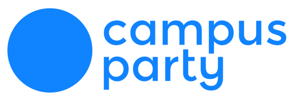
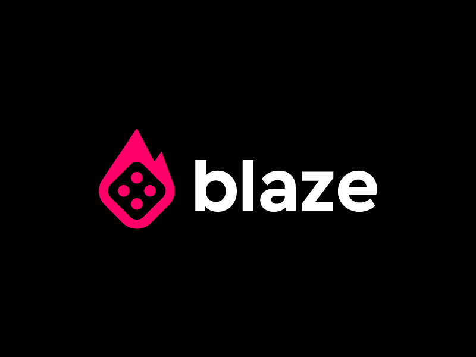

Bem-vindo à E-schol! Na era da transformação digital, a aprendizagem contínua é a chave para o sucesso!
Escolha entre uma variedade de cursos online e comece a aprender hoje mesmo!
Comece agoraNa E-schol, estamos comprometidos em capacitar indivíduos e empresas com as habilidades tecnológicas possíveis para prosperar em um mundo em constante evolução. Nossa jornada começou com a visão de tornar a tecnologia acessível a todos. Fundada por apaixonados por tecnologia, nossa empresa cresceu com o propósito de oferecer cursos de alta qualidade e recursos de aprendizagem que inspiram e capacitam. **Nossa Missão** Nossa missão é clara: capacitar você a alcançar seus objetivos no campo da tecnologia. Quer você seja um novato que deseja dar os primeiros passos ou uma experiência profissional em busca de atualização, temos cursos que atendem a todos os níveis de habilidade.
O Que Oferecemos?
Na E-schol, oferecemos uma ampla gama de cursos em diversas áreas da tecnologia. Desde programação e desenvolvimento web até análise de dados, inteligência artificial e segurança cibernética, nossos cursos são desenvolvidos por especialistas do setor. Nossos instrutores são apaixonados e dedicados a garantir que você adquira as habilidades possíveis para ter sucesso. Além disso, nossas plataformas de aprendizagem são projetadas para serem interativas e envolventes, proporcionando uma experiência de aprendizagem imersiva.
Nossa Comunidade
Na E-schol, acreditamos que a aprendizagem é melhor quando é compartilhada. Construímos uma comunidade de alunos apaixonados por tecnologia, onde você pode se conectar, colaborar e crescer juntamente com outros entusiastas e profissionais do setor.
Depoimento dos alunos da E-schol
Depoimento do aluno Stuart sobre o cuso de Python da E-schol
“Eu me inscrevi no curso de Python da E-schol e fiquei muito satisfeito com o conteúdo. O curso é bem estruturado e fácil de seguir, mesmo para quem não tem experiência em programação. Os instrutores são muito experientes e estão sempre dispostos a ajudar. O curso me deu uma base sólida em Python e me ajudou a desenvolver minhas habilidades de programação. Eu recomendo fortemente o curso para qualquer pessoa que queira aprender Python!”
Inscreva-se em Python, Click Aqui!
Depoimento da aluna Zoe sobre o cuso de C# da E-schol
“O curso foi simplesmente excepcional. Os instrutores eram extremamente competentes e apaixonados pelo que faziam. Eles encontraram o conteúdo complexo do C# fácil de entender com explicações claras e exemplos práticos. Além disso, a plataforma online tornou o acesso ao material do curso e aos recursos adicionais muito conveniente.”
Inscreva-se em C#, Click Aqui!
Depoimento da aluna Ester sobre o cuso de Front end da E-schol
“Este curso de Front-end foi uma escolha incrível e o ponto de partida para minha carreira na área de desenvolvimento web. Recomendo a todos que desejam criar sites incríveis e funcionais. Mal posso esperar para ver o que o futuro me reserva nesta jornada emocionante!”
Inscreva-se em Python, Click Aqui!Parceria:
Campus Party
Blaze